|
AI Characters
In this tutorial we will build an AI-network, one character that can combat against the player, and a simple script for the
character.
Download the level files for this tutorial from AI_examples.zip
AI-Network Creation
The characters in Max Payne 2 use a manually built AI-network to navigate and sample the environments. It consists of "AI-Nodes" that connect to each others, creating a network of connections over the level.
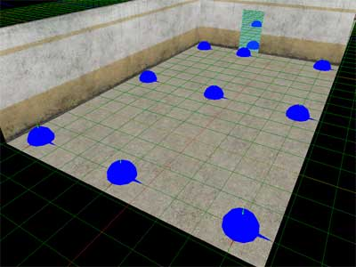
AI-nodes as seen in MaxED2
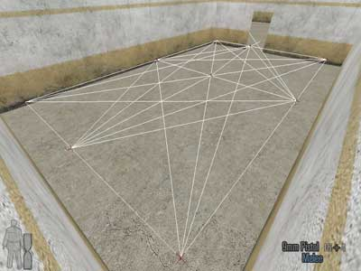
AI-network as seen in the game
In other words, if you want to have a character to move from point A to point B, there needs to be an AI-network there, otherwise the characters don't know where they can or can't move. And you need to build the AI-network yourself by placing nodes, which will connect to each others automatically.
To begin with the tutorial, open up the "Work" level of this tutorial to MaxED2.
Before creating any characters, let's first create an AI-network to the level. To do that we need to place AI-nodes onto the floors. Let's create the first one to a corner, any corner will do.
In F4-mode place the grid onto the floor (SHIFT-A), switch to F3-mode and point at the grid point where you want the AI-node to be created.
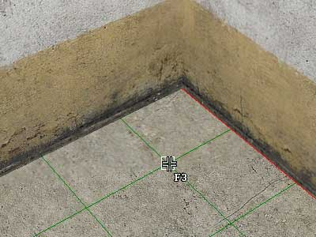
From the spawned "New entity" dialog select an entity type called
"AIN".
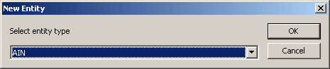
MaxED2 will still show you the properties of the newly created entity. We don't want to change any of them so press OK.
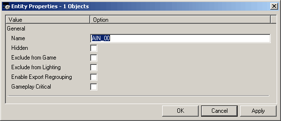
A blue sphere will appear onto the grid. If not, check your display filter (F1) for "AI-Nodes"
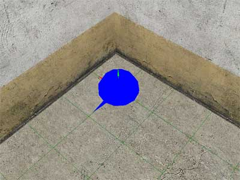
This is an AI-node and an AI-network will be calculated between the nodes that you place.
To continue building the AI network, copy/paste AI nodes to each corner of the two rooms, and two more nodes to both sides of the doorway.
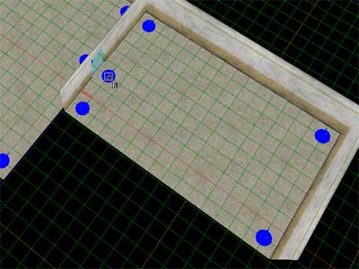
After grouping the nodes to the rooms (CTRL-E in F5), you now have little bit more than bare minimum of the AI-net built. If you export the level to the game you can view the resulting AI-net by pressing F8 in the game in developer mode.
Extra words about proper AI-node placement
As the enemies must use the AI-net in order to move around the level and seek for their target, you must not leave any areas into the levels that aren't overseen by an AI-node (otherwise the enemies cannot follow the player properly). Also every AI-node must have a connection to another AI-node so they will all build an island. There can be multiple independent AI-net islands in the level, but the enemies cannot move from one island to another by themselves.
The AI-system of Max Payne 2 utilizes environment sampling also via the AI-nodes. For example the AI-characters can determine in real-time if any of the AI-nodes nearby is in cover from their target ("Cover node") or is a valid shooting spot against their target (i.e. has Line-Of-Fire,
"LOF-node").
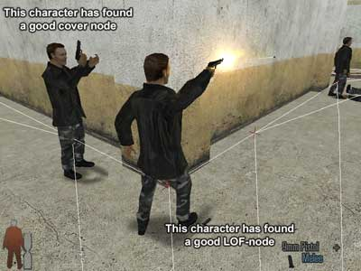
And as such is the case, it is usually a good idea to just mechanically cover the areas so that every inward corner has an AI-node (because corners are the last resort for cover; this way enemies will more likely find cover when needed) and every outward corner has AI-nodes built around them.
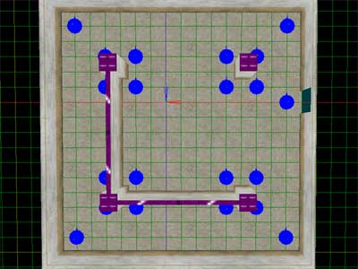
Ample amounts of AI-nodes don't really slow the game down at all so you don't need to worry about that. The orientation of the AI-nodes doesn't have any effect on anything either.
Extra words about AI-Net debug tools and troubleshooting
When you are making AI-nets you will notice that when you visualize the AI-net in the
game (F8), the nodes and the connections are sometimes drawn with different colors. All the AI-nodes in the same AI-net islands are drawn with the same color, so you can easily see if one location has an AI-net connection to another. If the AI-nodes are in different colors you will know there is no connection.
If the node connections are drawn in white when there is a two-way connection. If the connections are drawn in gradient blue when there is a one-way connection. The bright end is the source node and the dim end is the destination node. If the connections are drawn in gray when they are dynamically disabled (With AIN_CreateAIBlock message)
When calculating the connections between nodes, the system does a simple Line-of-Sight (LOS) check between the nodes that are found from the exact same height. Thus the system doesn't notice pits between such nodes (and basically you could build AI-nets into thin air if the nodes just are at the same height), and it is recommended to use AI_Node_Collision_Nodraw material category to build geometry between such nodes. This material can be used to build geometry that the AI-node connection calculation treats as solid geometry but it doesn't get exported to the game. Which also means you can built bridges with AI_Node_Collision_Nodraw to create AI-nets over pits.
For nodes that are on different heights, the system does a more complex test to see if a character could actually run from one node to another. In practice this means that the pits mentioned above would be taken into account also by lifting the nodes on the other side of the pit slightly.
For building AI-net that makes the enemies jump down from ledges, it is recommended to place the AI-nodes right along the edge, and to place another AI node right below.
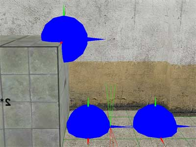
The maximum height for an AI-connection to drop vertically is 5 meters.
Thus also with long staircases you will need to have AI-nodes placed along the stairs so that the vertical length between two nodes is never more than 5 meters. The nodes simply will not connect otherwise. Also it is highly recommended to pad all the staircase with character colliding slides (You can use CharacterCollision_Nodraw material category).
Dynamic Objects aren't taken into account with AI-net calculations and all the connections pass through them. If you need to block connections through DOs, you need to close the connections dynamically or built a separate AI_Node_Collision_Nodraw object.
Also the nodes check the connection only against the nodes that reside in the same room or in the neighboring rooms. I.e. No connections will be made through two exits, which means every room must have at least one node if you want the AI-characters to be able to navigate through..
Character Creation
Now that we have an AI-net in place, we can create the first enemy to the level. Again place the grid onto the floor, point at a desired location in F3 mode, and press "N". From the "New entity" dialog select entity type "Enemy". It doesn't matter if the character is not standing along an AI-Net path as long as it has a direct access to an AI-node.
At the "Entity properties" window we are only interested of the enemy "skin" selection for now. All the different looking enemies of Max Payne 2 are found from the "Skins" drop-down dialog. Let's choose C03_Russian_A for this tutorial.
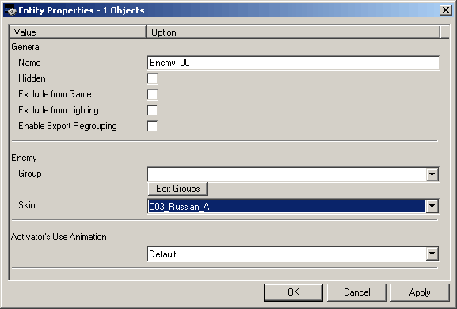
TIP: It is usually a good idea to rename every entity that has an FSM with something that You find descriptive. As the complexity in your level goes up, you don't necessarily want to have every character called
"Enemy_XX"
A cyan sphere will appear onto the floor, marking the startup location of the enemy. If not, check your display filter (F1) for
"Keypoints"
AI Controls
By default, the character will not actually do anything but stand there. We will still need to command it into some combat tactic. We can do this with a message called "AI_SetTactic" which takes the name of a tactic as a parameter. So open the FSM dialog for the enemy (Select the enemy and hit "B" in F5-mode), and to the "Startup" event add:
This->AI_SetTactic( Combat );
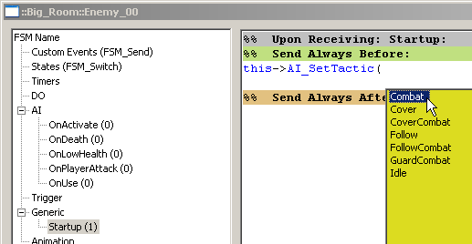
Now export to the game and the character will combat against Max.
Extra words about enemy groups
In the entity properties window of the character you saw a drop-down dialog called "Group". This refers to a system that you can use to bundle multiple enemies into groups, which will cause them to share their perceiving senses, and when setting targets they can be referred to by their group name. You can add and manage groups from "Edit groups" button. Group called "PLAYER_GROUP" is reserved for making AI-characters to belong to the same group as the player.
Extra words about AI-controls
If you want to freely try out various AI-controls, here's a brief reference for the commands:
AI_SetTarget( Target );
-
Sets the combat target for an AI-character.
-
Takes a name of a character, FSM, trigger, DO or a group number as a parameter.
-
Special target names are:
Player - This is the default
Enemies - Refers to all of the characters whose target is set to
"player" i.e. the enemies of the player.
AI_SetTargetGroups( Target1, Target2 );
AI_SetTactic( Name );
-
Sets the combat tactic for the AI character. The tactics determine the AI-behavior and are hard-coded.
-
Takes a tactic name as a parameter
Combat - Shoots at the target and when target lots runs towards an AI-Node with Line-of-fire (LOF) to target..
Cover - Tries to run to cover nodes.
CoverCombat - Shoots at the target and seeks for cover periodically
Follow - Follows the player, doesn't combat. Usable with friendly NPCs.
FollowCombat - Follows the player but fights against its targets at the same time. Should use with target set to "Enemies"
GuardCombat - Like CoverCombat but doesn't follow its target very far, but stays put instead.
"Idle" - Stands idle. This is the default.
AI_RevealTarget();
AI_EnableHearing( true/false );
AI_EnableSeeing( true/false );
AI_EnableFeeling( true/false );
AI_ResetOnActivate();
-
Resets the OnActivate event to its initial state.
-
OnActivate is an event that all the characters have in their FSM, and it is sent only once, when they perceive their target for the first time. This message can be used to reset the OnActivate event so that it is sent again when perceiving a target for the next time.
AI_EnableVoiceEvents( true/false );
Inventory Controls
Here are the controls for managing the inventories of the enemies.
C_RemoveAllWeapons( weapon ) ;
-
Removes all weapons except the one defined as a parameter, which will instantly appear in hand and get infinite ammo.
-
Takes a weapon name or "empty" as a parameter.
C_RemoveAllWeaponsMelee( weapon );
-
Removes all weapons except the one defined as a parameter, which will instantly appear in hand. Doesn't give any ammo.
-
Takes weapon names or "empty" as a parameter.
C_PickupWeapon( weapon );
C_PickupAmmo( weapon , amount );
C_SetInfiniteAmmo( weapon, true/false );
P_CreateProjectileToBone ( ProjectileName, Amount, Bone );
This->P_CreateProjectileToBone ( Enemy_Painkiller, 1 , "Bip01 L Gun");
will drop a painkiller from the left gunbone of the enemy. The bone name is in quotation marks because it includes spaces.
Character Scripting
You can also manually script the characters to do various things. Basically the scripting system works so that you can send bunch of commands to a character which it will store as a stack and will execute one by one. For example you can script a character to walk to a specific waypoint, then animate, then crouch and shoot.
Here's brief descriptions about the commands.
AI_AddCommand( Move, Act, Parameters );
AI_PushCommand( Move, Act, Parameters );
-
Pushes a script command as first item to the stack, to be executed immediately.
-
The third parameter should be empty quotation marks when not used
The actual script commands for the above:
|
MOVE |
ACT |
PARAMETERS |
|
Stand - Stands at spot. This command is infinitely long, so the script stack will not advance by itself after this command. |
Nothing / Aim / LookAt / LookAtPlayer / Shoot / Reload / Throwgrenade / Throwmolotov |
- |
|
Crouch - Crouches at spot. This command is infinitely long. |
Nothing / Aim / LookAt / LookAtPlayer / Shoot / Reload |
- |
|
Walk - Walks to a waypoint |
Nothing / Aim / LookAt / LookAtPlayer / Shoot |
The absolute hierarchy name of a waypoint. E.g. "::room::waypoint1" |
|
Run - Runs to a waypoint |
Nothing / Aim / LookAt / LookAtPlayer / Shoot |
The absolute hierarchy name of a waypoint. E.g. "::room::waypoint1" |
|
Animate - Performs a full-body animation |
Nothing / Lookat / LookAtPlayer |
Full-body animation name |
|
AnimateNoBlend - Performs a full-body animation without blending in the beginning and the end. |
Nothing / Lookat / LookAtPlayer |
Full-body animation name |
|
AnimateLooping - Performs a full-body animation and loops it. This command is infinitely long. |
Nothing / Lookat / LookAtPlayer |
Full-body animation name |
|
AnimateLoopingNoBlend - Performs a full-body animation and loops it, without blending in the beginning and the end. This command is infinitely long. |
Nothing / Lookat / LookAtPlayer |
Full-body animation name |
|
SubAnimate - Performs a sub-animation. |
Nothing |
Sub-animation name |
|
DodgeBackward |
Nothing / LookAt |
- |
|
DodgeForward |
Nothing / LookAt |
- |
|
DodgeLeft |
Nothing / LookAt |
- |
|
DodgeRight |
Nothing / LookAt |
- |
|
ShootDodgeBackward |
Nothing / LookAt |
- |
|
ShootDodgeForward |
Nothing / LookAt |
- |
|
ShootDodgeLeft |
Nothing / LookAt |
- |
|
ShootDodgeRight |
Nothing / LookAt |
- |
|
FSMSend - A special command for triggering a custom event from the script stack. |
Nothing |
Custom event name |
About the "Act" commands:
Aim - Aims towards the target (or where the AI thinks the target is)
LookAt - Orientates towards the target (or where the AI thinks the target is)
LookAtPlayer - Orientates towards the player
Shoot - Shoots at the target if there's LOF
Reload - Reloads
ThrowGrenade - Throws a grenade (if there is one in the inventory)
ThrowMolotov - Throws a molotov (if there is one in the inventory)
Note that all the above scripting causes "force update" to the characters, except for STAND, CROUCH and ANIMATELOOPING, for which you should use the manual command "C_ForceUpdate( time );"
AI_AddPatrolCommand( Waypoint, Waypoint, Waypoint );
AI_PushPatrolCommand( Waypoint, Waypoint, Waypoint );
AI_StopScripting();
AI_EnablePerceiving( true/false );
-
This is a very important message. The character scripting works so that the enemies will stop their scripting as soon as they perceive their target. So in the cases where you want a character to perform a script without interruptions, you must disable the sensory systems of the character. You can do this by using the before mentioned AI_EnableHearing / Seeing / Feeling -messages, but in most cases it is far easier to use the special command AI_EnablePerceiving( false );, which blocks all the sensory systems regardless of their state, for the period of the scripting. When the AI returns to the tactic behavior, AI_EnablePerceiving automatically returns to true, and the sensory systems behave like they did before.
Before going any further, let's add a simple script stack to our character in the tutorial level. There's a small pile of explosive objects in the level, so let's say we want the character to be aiming at the door initially, and when seeing the player, to dodge into the pile of explosives for cover.
First let's move the character to a convenient spot, some 4-5 meters away from the explosive pile, orientated towards the doorway.
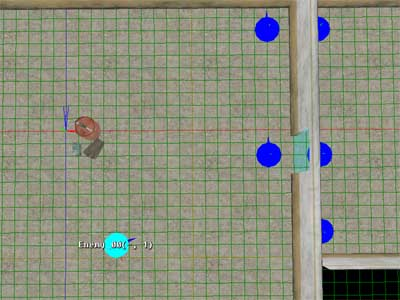
To make the character aim towards the door at startup, we add couple of messages to its StartUp event, so it will look like this:
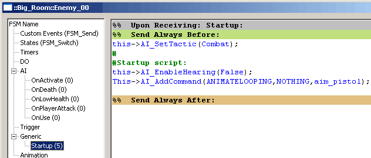
In short, we disabled hearing so that the enemy won't drop out from the script as the player is making noise in the previous room, and we added a script command to perform an animation that just aims forwards.
The OnActivate event is an event that is triggered when a character perceives its target for the first time, so we will use that to trigger the script for dodging to cover. It should look like this:
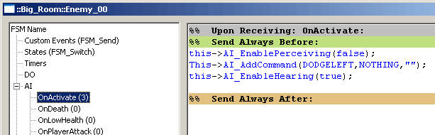
We disable the perceiving again as we want the enemy to perform the script through, and we add a script command to dodge left. We also enabled hearing back on, although
it doesn't actually affect the behavior during this script (since all the perceiving is blocked anyway), but
it is here so that the enemy will have hearing after the script.
Extra words about the hard-coded events for the characters:
The other hard-coded events for characters are triggered as follows;
OnDeath - When character dies
OnLowHealt - When less health than 50%
OnPlayerAttack - When getting hit by a player's bullet
OnUse - When being "used" by the player
Now you can export it and try it in the game. Also try it out by having the character AI debug info on (press F7 in the game, in developer mode). The debug info is printed right on top of the characters in the game world. It looks something like this:
(20:6) ::Big_Room::Character_00.AI
Target player AP[PSHF]
Script : ANIMATELOOPING, NOTHING, index 522
The information is:
-
(20:6) - The index number of the character AI, This is assigned at runtime and can be used to refer to the AI during the game, via the console. E.g. 20:6->AI_EnableVisualization(True);
-
::Big_Room::Character_00.AI - The full hierarchy name of the character AI
-
Target player - The target of the enemy is player
-
AP[PSHF] - Alerted state / Perceiving target[
Perceiving enabled / Seeing enabled / Hearing enabled /
Feeling enabled ] (Just displays a "-" if the corresponding flag is disabled)
-
Script : ANIMATELOOPING, NOTHING, index 522 - The script stack, just has one item in this example. The index number is the internal index number of the animation the character is performing.
Extra words about AI debugging
Here is more AI debugging information which you should find very useful; You can dump information about the state of an AI character with AI_Dump -message. It requires .AI suffix to the receiver so it gets sent to the AI-component of the character, e.g.
::Room::e1.AI->AI_Dump();
You can also dump the state of the character itself, by C_Dump. It doesn't have a suffix at all. E.g.
::Room::e1->C_Dump();
And you can turn on some AI visualizations by sending AI_EnableVisualization( true ); to the AI component. E.g.
::Room::e1.AI->AI_EnableVisualization( true );
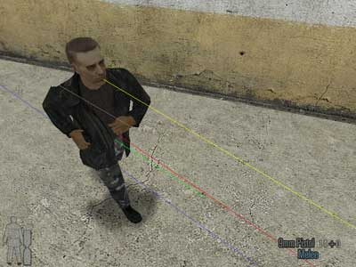
The character can see his target as his line-of-sight is true (right yellow line. It is dim when LOS false), but he cannot shoot as his line-of-fire is false (gray line). It is bright white when LOF true). He is running along the blue line.
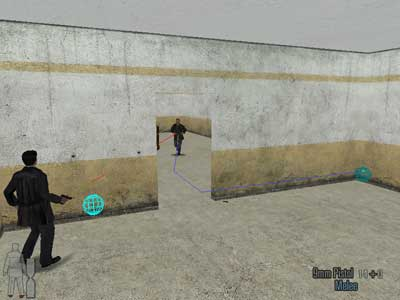
The bright cyan sphere here is where the AI character thinks his target is, and the dim cyan sphere is where the AI system has determined the character should run to get to shoot at the target. It is currently the running destination.
Final words
Now you should be equipped to start building your own combat and scripted scenes. For the end, let's still mention that the player character also has an AI so if you just disable the player controls by MaxPayne_GameMode->GM_SetPlayerControls( False ); you can have the player character doing AI combat and scripted just like any other character in the game.
Also note that the AI net that was built in this tutorial is too sparse to really work well. You shouldn't have very large distances between AI-nodes. Even then I don't recommend you fill empty room with lots of AI nodes if you intent to add any geometry into the rooms that must be taken into the account with the AI-net, as you will be adding more nodes
later anyway, and this way it won't become a mess of nodes that easily.
If you don't seem to get the desired behavior when building scenes involving enemy groups, scripting, and OnActivate, here's some detailed information
about OnActivate group behavior when using AI_EnablePerceiving:
Here's few more messages you should find useful:
AIN_CreateAIBlock( radius );
AIN_RemoveAllBlocks();
DG_CreateDanger( radius, time, BoolExplosion );
-
Creates a danger that the enemies will flee from
-
If it's an explosion danger, the enemies just cover from the center point of the explosion, even if they are within the radius
DG_RemoveAllDangers( );
C_Hide( true/false );
-
Can be used to hide a character (It will freeze completely). When unhidden the character will continue doing whatever it was
doing
-
Almost every enemy in Max Payne 2 is actually hidden at startup and then unhidden only once the player is approaching the areas where they are, to ensure the enemies won't become alerted too
early
|